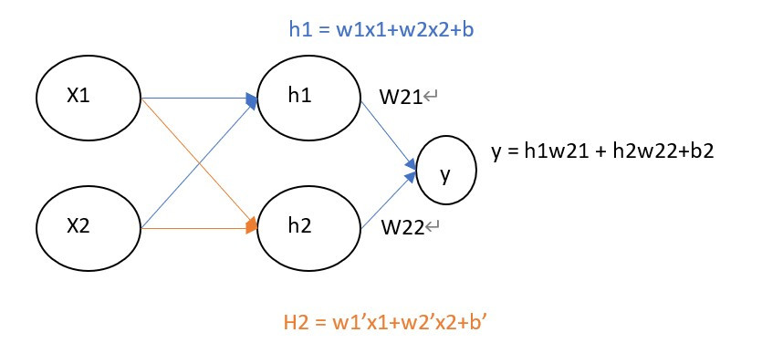
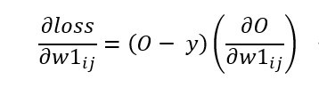
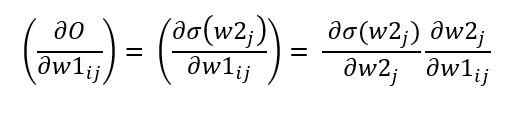
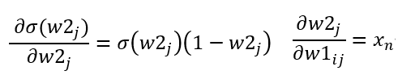
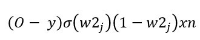
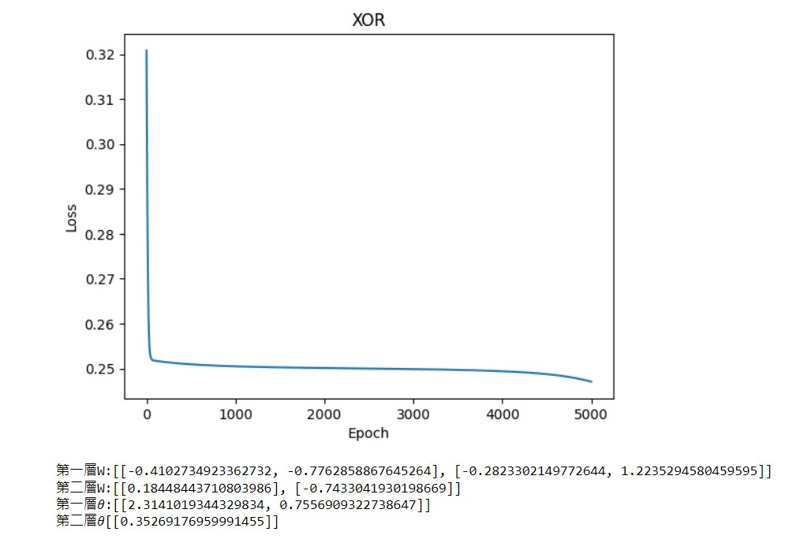

【day27】手刻神經網路來解決XOR問題-多層感知器 (Multilayer perceptron) (下)
發布日期: 2022-10-01 20:49:22
原文連結: https://ithelp.ithome.com.tw/articles/10302158
手刻多層感知器
今天的目錄如下:
1.建立與初始化資料
2.架構神經網路模型
3.更新參數
4.顯示結果
建立與初始化資料
與昨天相同我會把它寫成class的形式，因為是多層感知器，我們需要根據資料設定每一層的參數，在這裡我們先設定一下所有邏輯閘的資料集。
x = [[0.,0.], [0.,1.], [1.,0.], [1.,1.]]
x = torch.tensor(x)
XOR_y = torch.tensor([[0.], [1.], [1.], [0.]])
AND_y = torch.tensor([[0.], [0.], [0.], [1.]])
OR_y = torch.tensor([[0.], [1.], [1.], [1.]])

接下來要建立上圖的神經網路架構，所以需要來了解每一層的維度大小，首先輸入是(4,2)，進入到隱藏層則要縮到(2,2)，並且要完成
y=wx+b這一個公式，根據上圖可以知道所有的隱藏層輸入都是h=w1x1+w2x2+b，只是每一個輸入的w1、w2、b都不相同而已。
所以我們將公式轉換為矩陣格式y = WX+b中的W、b必須符合輸入大小，所以輸入到隱藏層W是(2,2)，隱藏層到輸出則是(2,1)，最後寫在__init__裡就可以隨時調整各層的神經元數量了。
class model:
def __init__(self,inputs_shape , hidden_shape ,output_shape):
#requires_grad=True 表示之後能夠被反向傳播(pytorch用法)
#numpu改用np.random.uniform(size=(input_shape, hidden_shape))
self.w1 = torch.randn(inputs_shape, hidden_shape, requires_grad=True)
self.w2 = torch.randn(hidden_shape, output_shape, requires_grad=True)
self.b1 = torch.randn(1,hidden_shape, requires_grad=True)
self.b2 = torch.randn(1,output_shape, requires_grad=True)
self.loss = []
self.mse = MSELoss()
架構神經網路模型
昨天說到神經網路的三個步驟前向傳播、反向傳播計算梯度、梯度下降更新數值，不過在前向傳播前我們需要定義激勵函數，將我們每一層的結果都變成非線性的結果。
def sigmoid(self, x):
#numpy改用np.exp
return 1 / (1 + torch.exp(-x))
接下來開始定義前向傳播的公式wx+b，這邊用self的寫法是因為我們在反向傳播時還需要用到這些數值
def forward(self,x):
#pytorch中@代表矩陣相乘用*只會代表相同index的數字相乘
#numpy須將@改用dot EX:np.dot(x, self.w1)
#輸入到隱藏
h = x @ self.w1 + self.b1
h_out = self.sigmoid(h)
#隱藏到輸出
output = h_out @ self.w2 + self.b2
outpu_fin = self.sigmoid(output)
return outpu_fin
更新參數
pytorch
在pytorch當中計算梯度非常簡單，因為只需設定了requires_grad=True，就能夠直接使用.grad將梯度計算完畢。pytorch也能夠使用.backward()快速的做反向傳播更新梯度數值，這個我們先前用過了很多次只是我們不知道這個function的實際含意。
def updata(self, loss, lr):
loss.backward()
with torch.no_grad():
self.w1 -= self.w11.grad * lr
self.w2 -= self.w21.grad * lr
self.b2 -= self.b2.grad * lr
self.b1 -= self.b1.grad * lr
self.w11.grad.zero_()
self.w21.grad.zero_()
self.b1.grad.zero_()
self.b2.grad.zero_()
numpy
但numpy更新梯度的方式就很困難了，因為在這裡我們必須對所有要更新的數值做偏微分，而這個過程會非常的複雜。
經過昨天【day26】手刻神經網路來解決XOR問題-多層感知器 (Multilayer perceptron) (上)的課程中學習到的梯度計算方式，我們能夠知道若要計算出隱藏層的梯度，需要對計算出的loss值與輸入到隱藏層(w1)的資料做偏微分(O是預測輸出，W是輸入到隱藏層的資料、i是輸入、j連接到第幾個隱藏層神經元)

接下來分解∂O/∂w1

其中∂σ(w2)/∂w2)為sigmoid函數的導數f'(x) = f(x)(1 - f(x))。
輸入則是∂w2/∂w1 = xn(W = wx+b)

我們就會得到以下公式，這公式也代表(預測輸出-實際值)*delsigmoid(最後的輸出)*最後的權重*輸入

接下來計算好梯度後，就與pytorch更新梯度的方式相同了。
def updata(self, x, y, lr):
loss = 0.5 * (y - self.output_final) ** 2
self.loss.append(np.sum(loss))
error_term = (self.output_final - y)
#隱藏層梯度(注意這裡還多一層simgoid)
grad1 = x.T @ (((error_term * self.delsigmoid(self.output_final)) * self.w2.T) * self.delsigmoid(self.h1_out))
#輸出層梯度
grad2 = self.h1_out.T @ (error_term * self.delsigmoid(self.output_final))
self.w1 -= lr * grad1
self.w2 -= lr * grad2
self.b1 -= np.sum(lr * ((error_term * self.delsigmoid(self.output_final)) * self.w2.T) * self.delsigmoid(self.h1_out), axis=0)
self.b2 -= np.sum(lr * error_term * self.delsigmoid(self.output_final), axis=0)
def delsigmoid(self, x):
return x * (1 - x)
顯示結果
最後只要測試結果是否正確，以及繪製出loss折線圖就大功告成了
def predict(self, x):
#pytorch需要加入torch.no_grad
with torch.no_grad():
return self.forward(x) >= 0.5
def show(self, title):
plt.plot(self.loss)
plt.title(title)
plt.xlabel("Epoch")
plt.ylabel("Loss")
plt.show()
print(f'第一層W:{self.w11.tolist()} \n第二層W:{self.w21.tolist()} \n第一層?:{self.b1.tolist()} \n第二層?{self.b2.tolist()}')
model.show()

測試XOR結果
model.predict(x)
------------------------顯示------------------------
array([[ True],
[False],
[False],
[ True]])
今天的程式比單層神經網路還要複雜一點，最主要的原因還是反向傳播的計算，如果都了解了這些計算方式後，我相信手刻出其他神經網路就只是時間早晚的問題了。
完整程式碼(pytorch)
import torch
from torch.nn import MSELoss
import matplotlib.pyplot as plt
class model:
def __init__(self,inputs_shape , hidden_shape ,output_shape):
self.w1 = torch.randn(inputs_shape, hidden_shape, requires_grad=True)
self.w2 = torch.randn(hidden_shape, output_shape, requires_grad=True)
self.b1 = torch.randn(1,hidden_shape, requires_grad=True)
self.b2 = torch.randn(1,output_shape, requires_grad=True)
self.loss = []
self.mse = MSELoss()
def fit(self, x, y , lr=0.2, epoch=200):
for i in range(epoch):
output = self.forward(x)
loss = self.mse(output, y)
self.loss.append(float(loss))
self.updata(loss,lr)
def updata(self, loss, lr):
loss.backward()
with torch.no_grad():
self.w1 -= self.w1.grad * lr
self.w2 -= self.w2.grad * lr
self.b2 -= self.b2.grad * lr
self.b1 -= self.b1.grad * lr
self.w1.grad.zero_()
self.w2.grad.zero_()
self.b1.grad.zero_()
self.b2.grad.zero_()
def forward(self,x):
h = x @ self.w1 + self.b1
h_out = self.sigmoid(h)
output = h_out @ self.w2 + self.b2
outpu_fin = self.sigmoid(output)
return outpu_fin
def sigmoid(self, x):
return 1 / (1 + torch.exp(-x))
def predict(self, x):
with torch.no_grad():
return self.forward(x) >= 0.5
def show(self, title):
plt.plot(self.loss)
plt.title(title)
plt.xlabel("Epoch")
plt.ylabel("Loss")
plt.show()
print(f'第一層W:{self.w1.tolist()} \n第二層W:{self.w2.tolist()} \n第一層?:{self.b1.tolist()} \n第二層?{self.b2.tolist()}')
x = [[0.,0.], [0.,1.], [1.,0.], [1.,1.]]
x = torch.tensor(x)
XOR_y = torch.tensor([[0.], [1.], [1.], [0.]])
AND_y = torch.tensor([[0.], [0.], [0.], [1.]])
OR_y = torch.tensor([[0.], [1.], [1.], [1.]])
XOR_model = model(2, 2, 1)
AND_model = model(2, 2, 1)
OR_model = model(2, 2, 1)
XOR_model.fit(x, XOR_y, 0.2, 5000)
AND_model.fit(x, AND_y,0.2, 5000)
OR_model.fit(x, OR_y,0.2, 5000)
XOR_model.show('XOR')
AND_model.show('AND')
OR_model.show('OR')
print(XOR_model.predict(x),AND_model.predict(x),OR_model.predict(x),sep='\n\n')
完整程式碼(numpy)
import numpy as np
class model:
def __init__(self, input_shape, hidden_shape, output_shape):
self.w1 = np.random.uniform(size=(input_shape, hidden_shape))
self.w2 = np.random.uniform(size=(hidden_shape, output_shape))
self.b1 = np.random.uniform(size=(1, hidden_shape))
self.b2 = np.random.uniform(size=(1, output_shape))
self.loss = []
def updata(self, x, y, lr):
loss = 0.5 * (y - self.output_final) ** 2
self.loss.append(np.sum(loss))
error_term = (self.output_final - y)
#隱藏層梯度(注意這裡還多一層simgoid)
grad1 = x.T @ (((error_term * self.delsigmoid(self.output_final)) * self.w2.T) * self.delsigmoid(self.h1_out))
#輸出層梯度
grad2 = self.h1_out.T @ (error_term * self.delsigmoid(self.output_final))
self.w1 -= lr * grad1
self.w2 -= lr * grad2
self.b1 -= np.sum(lr * ((error_term * self.delsigmoid(self.output_final)) * self.w2.T) * self.delsigmoid(self.h1_out), axis=0)
self.b2 -= np.sum(lr * error_term * self.delsigmoid(self.output_final), axis=0)
def sigmoid(self, x):
return 1 / (1 + np.exp(-x))
def delsigmoid(self, x):
return x * (1 - x)
def forward(self, x):
self.h1 = np.dot(x, self.w1) + self.b1
self.h1_out = self.sigmoid(self.h1)
self.output = np.dot(self.h1_out, self.w2) + self.b2
self.output_final = self.sigmoid(self.output)
return self.output_final
def predict(self, x):
return self.forward(x) >= 0.5
def fit(self,x,y,lr,epoch):
for _ in range(epoch):
self.forward(x)
self.updata(x,y,lr)
def show(self, title):
plt.plot(self.loss)
plt.title(title)
plt.xlabel("Epoch")
plt.ylabel("Loss")
plt.show()
print(f'第一層W:{self.w1.tolist()} \n第二層W:{self.w2.tolist()} \n第一層?:{self.b1.tolist()} \n第二層?{self.b2.tolist()}')
x = np.array([[0,0], [0,1], [1,0], [1,1]])
XOR_y = np.array([[0], [1], [1], [0]])
AND_y =np.array([[0], [0], [0], [1]])
OR_y = np.array([[0], [1], [1], [1]])
XOR_model = model(2, 2, 1)
AND_model = model(2, 2, 1)
OR_model = model(2, 2, 1)
XOR_model.fit(x, XOR_y, 0.2, 5000)
AND_model.fit(x, AND_y,0.2, 5000)
OR_model.fit(x, OR_y,0.2, 5000)
XOR_model.show('XOR')
AND_model.show('AND')
OR_model.show('OR')
print(XOR_model.predict(x),AND_model.predict(x),OR_model.predict(x),sep='\n\n')
課程中的程式碼都能從我的github專案中看到
https://github.com/AUSTIN2526/learn-AI-in-30-days